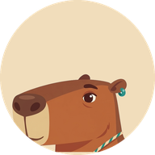
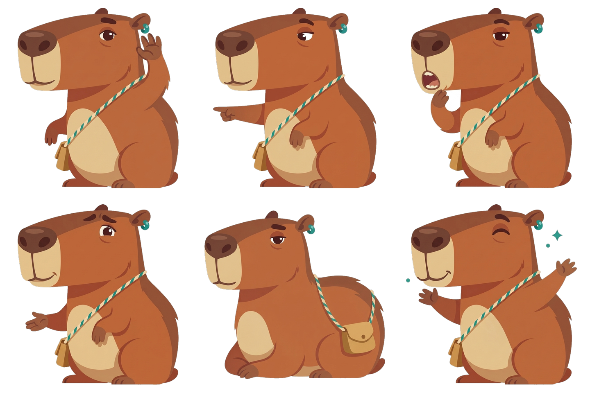
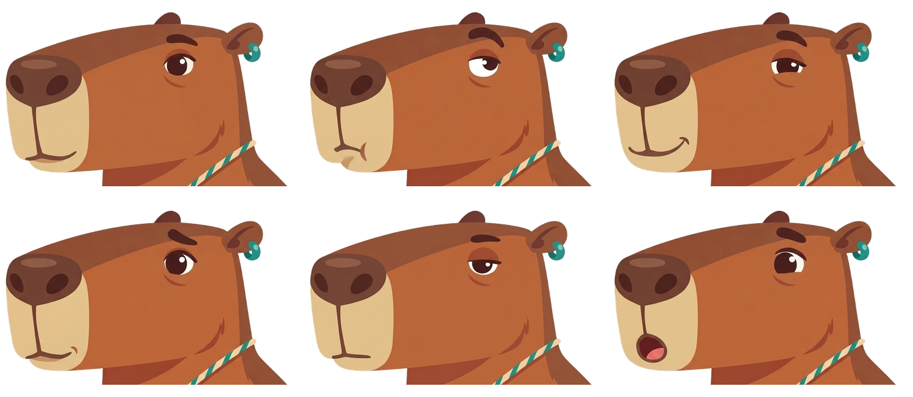
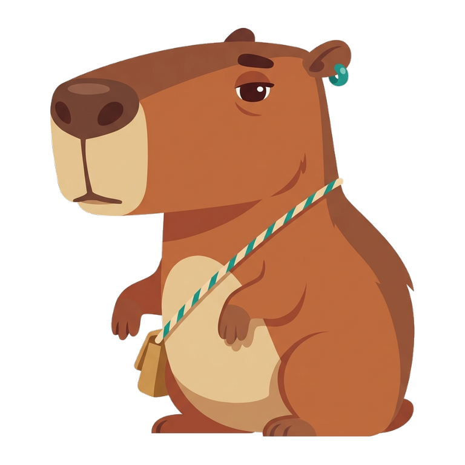

Pair 1


Which one would you want teaching you to read?
Each pair shows one real lesson screen from a Duolingo ABC screenshot and one real Sound Out screen with Kapi placed into it. Both are cropped to the lesson area (no marketing text, no phone frame), shown at the same size, and the A/B side is random. Pick the side where you would rather be taught to read, then press reveal.



The icon is a head crop: long boxy snout, tiny high ear with the teal bead. Silhouette alone separates it from a bear.


